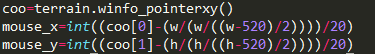

Sort Pousser
Pour le sort pousser il a fallu créer deux fonctions :
- La première permettant au joueur de cibler le mur qu'il veut pousser.
Cette fonction se décompose en deux parties la première permettant de vérifier si le cooldown mis en place pour ce sort ne soit pas actif ce qui empêche sinon la possibilité d'utiliser le sort.
- La deuxième partie de la fonction quant à elle, une fois le cooldown vérifié s'occupe de créer des blocs de sélection qui se placent autour du personnage sur les cases contenants des blocs. Quand le joueur cliquera sur un de ces blocs de sélection, le programme effectuera ensuite la deuxième fonction.
- Vient donc ensuite la deuxième fonction qui va permettre d'effectuer l'action propre au sort. Pour cela on récupère dans un premier temps les coordonnées de la souris pour savoir quel bloc le joueur a ciblé.
On stock ces coordonnées dans une variable et on crée une autre variable qui permettra de vérifier si la case située derrière le bloc ciblé est vide. Ensuite on choisit en fonction des coordonnées l'une des quatre fonctions propre à chaque position (haut, bas ...). Dans chacune de ces fonctions on vérifie si le joueur a bien sélectionné un bloc et si la case suivant ce bloc est bien vide. Si ces conditions sont remplies alors on supprime ce bloc et on utilise la fonction mur pour créer un mur sur la case vide précédemment vérifiée si les conditions ne sont pas remplis alors cela annule la fonction.
Et voila il n'y a plus qu'à incrémenter la fonction dans la fonction permettant de choisir les sorts.


Page précedente

Page suivante